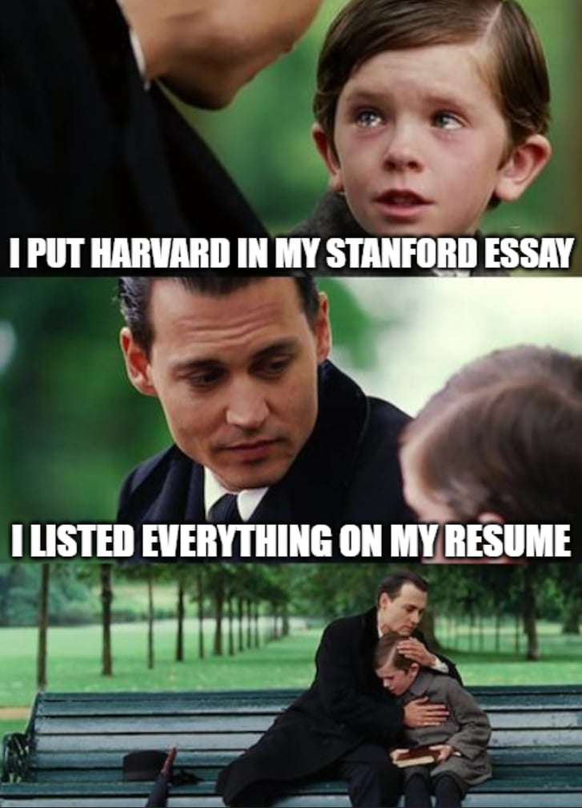

By reading this section, you will be able to answer the following questions:
- What is the general structure of a Statement of Purpose?
- How should I structure my personal/diversity and optional essays?
- How should I approach drafting and getting feedback on my essays?
For privacy matters, I will not share my personal statement. However, I will write in detail my essay structure, and the process from beginning to end.
1. Statement structure: 2 pages, typed in Latex and submitted as a PDF file.
- Paragraph 1: Brief introduction. In general, I wrote this essay with the assumption that my essay
would be read after the committee had read 1,000 other essays. Therefore, they would skim, so the first
paragraph (and the first sentence of each coming paragraph) took the most time to write.
- My name and major
- Why was I interested in Mathematical Analysis and its applications?
- Why did I do the Budapest semester in Mathematics?
- How did I use my study abroad experience to solve an open problem and prepare a publication?
- Briefly describe my teaching assistant experience
- Why my experience in general motivate me to apply for the AMSC program at UMD
- Paragraph 2: Describe in detail my research experience that motivated me to do Analysis and its
application.
- Who was the advisor?
- What was the problem? What did I solve?
- The “So What” part: Why does it matter that I solved the problem? I in fact did not solve the full problem, so I wrote about what I learned and what excited me.
- Connection to the next paragraph: “This experience did more than just motivate me. It solidified my academic goals and pushed me to look for an environment to develop my understanding for both pure Analysis and its application in other branches of Math.”
- Paragraph 3: My study abroad experience. I’m happy to quote this paragraph directly from my
essay.
Therefore, in Spring 2025, aiming for more advanced level courses to leverage my study, I took an exchange semester with a program called Budapest Semester in Mathematics. In Budapest, I had a chance to take more Math under the guidance of Professor Vidyansky in Analysis, Professor Miklos in Combinatorics, Professor Moussong in Topology, Professor Zsamboki in Deep Learning. This is by far the most intensive semester of Math I ever had. Despite the challenge, the experience was incredibly rewarding. The 14 weeks I spent in Budapest significantly shifted my perspective on mathematics. The intensity of the curriculum pushed me beyond simply learning topics: it motivated me to see the interconnection between different branches of Math.
Comments: One of the feedback was that listing courses and professors is redundant. I got it, but I decided to keep them there because I wanted to highlight the intensity of the curriculum and how they would look by putting all of them together.
- Paragraph 4: Basically describing how the coursework in Budapest motivates an approach to solve one of my Augustana professors’s questions in their PhD thesis. Briefly introduce the motivation and conclude the paragraph that we were preparing the manuscript for submission.
- Paragraph 5: Discuss why teaching also matters in my math experience. Focus on what
I learned from teaching to what I will bring to the PhD program. Example:
Taking the role as the first SI Leader, I am responsible for supporting students from diverse backgrounds, including international students, students with disabilities, and students from underprivileged economic groups…More importantly, the role motivated me to actively contribute to the academic community. I am eager to bring this spirit to the University of Maryland, where I hope to be a teaching assistant to help foster the same inclusive and intellectually-vibrant environment that I am so passionate about building.
Personal comment as of June 2026: if you think I used too many big words, you are right. I feel the same now :) A bit cliche, but it was what I contributed to the Augustana College community and what I hope to bring to UMD.
- Paragraph 6: But why UMD? I briefly write about my connection to the research topics offered at UMD, the school location that is close to national labs, etc.
6-7 paragraphs are enough (got my joke?).

Key-takeaway:
- If you can keep the essay short, keep it short.
- Write digestible paragraphs. Don’t be wordy. Communicate directly to the reader.
- Keep a narrative in a structural format, meaning if you skim through your essay in under 30 seconds you still get most of the points that should be communicated.
2. Optional Essay
I’m not sure if the committee read my optional essays. However, my point is that if something is labeled as optional on the application, it is not optional. I submitted 2 short essays, one in leadership, and the other in community. The reason is simple: I don’t simply see myself as a mathematician without my leadership experience and a community-focused mindset.
I am happy to share my community essay as follows:
My community involvement is strongly characterized by my service to the international student body at Augustana College. I served my community in multiple leadership roles in the Office of International Student and Scholar Services (OISSS) and the International Admissions Office (IAO). Holding leadership positions in these two largest international offices, I worked for positive change by creating cultural programs and directly addressing ongoing issues within the community. My experiences have prepared me to be a leader with a sharp and creative mind. A sharp mind enables me to unveil underlying problems in my community, and a creative mind helps me to implement solutions that work. In the last 3 years, I have created two new cultural programs that create bonds and connect the community, and I assisted in recruiting over 500 international students by contributing my insights to the admissions process as an international student and leader.
The work I have done for the international community has inspired me to be a better mathematician. The experience of serving the international student community builds a strong foundation for my service to the mathematics community. I tutored students from diverse backgrounds, providing them resources to nurture their mathematics skills. I created and hosted supplemental instruction for College Algebra and Calculus, enhancing accessibility for the transition to college-level math and advanced-level calculus. I organized community presentations regarding research, enhancing exposure to math for a wide range of audiences. My community service enriches my perspective of doing math by putting the human factor at the center of mathematics. I used to see math as merely numbers and letters, but by considering people - people who like math, who do math, and who will be influenced by math - I now see math as a force to build community and call for social change.
3. How many drafts did it take to get there?
A lot. Even if you are an experienced writer, you will never be happy with your first draft. It took the most effort to get a shitty first draft that I knew I would not use, but in fact, that shitty first draft was the foundation for all my writing later. Here’s my personal advice:
- Read sample statements, but you don’t have to follow them. Find your own voice.
- Have someone to help you brainstorm the statement through conversation, but don’t expect them to help you write your first shitty draft.
- Have a team to comment on your essays, and my suggestions are:
- One of your professors who knows what type of student and researcher you are.
- One of your friends who knows what type of person you are.
- One stranger that barely knows or knows very little about you. Have them write down the main points they can remember after reading your essay. Are those points the ones you want to communicate to the committee?
- One student from the program to which you are applying.
- Do not over-proofread your essay.
- Know your audiences, but still stay true to yourself. If everyone writes their essays in the way that would please the committee, every essay would technically be the same.